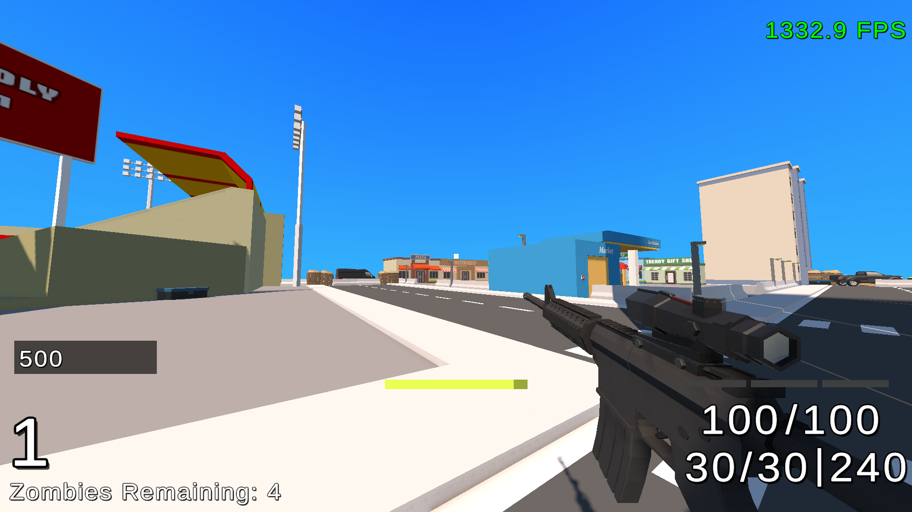
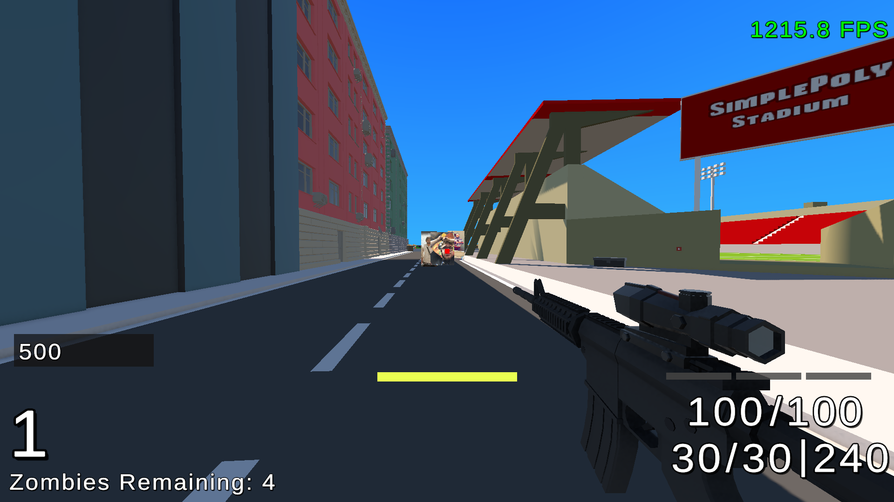

Zombie Survival FPS – Unity Gameplay Systems Project
A wave-based first-person shooter built in Unity using C#, focused on scalable gameplay systems including enemy AI, combat mechanics, and progression systems.
Overview
This project is a wave-based zombie survival FPS designed to explore gameplay system design and player progression. The core focus was building scalable gameplay systems such as enemy scaling, combat mechanics, and resource management, while maintaining a responsive and engaging player experience. The game increases in difficulty over time through dynamic enemy behaviour and stat scaling, encouraging players to adapt their strategy and manage resources effectively.
Key Features
- Wave-based survival system with increasing difficulty
- Multiple zombie types with progression-based spawning
- FPS combat system with recoil, fire modes, and penetration
- Resource management (ammo, health, armour)
- Enemy scaling (health, speed, damage per wave)
- ADS system with movement trade-offs
- Point-based progression and upgrade system
- Interactive UI for wave tracking and player stats
- Dynamic enemy spawning based on player position



Technical Breakdown
Gameplay Loop & Wave System
Designed and implemented a wave-based progression system where each wave increases in difficulty through enemy scaling and spawn logic. The system tracks wave progression, enemy counts, and completion conditions, ensuring a consistent gameplay loop while allowing difficulty to scale over time.
Enemy System & Scaling
Developed a modular enemy system with multiple zombie types (Walkers, Joggers, Sprinters), each introduced progressively based on wave number. Enemy stats such as health, movement speed, and damage scale dynamically, increasing challenge while maintaining predictable progression.
Combat System
Implemented a first-person combat system featuring:
- Semi-auto and full-auto fire modes
- Recoil affecting weapon accuracy
- Bullet penetration through multiple enemies
These systems introduce mechanical depth and reward player skill and positioning.
Player Mechanics
Developed player systems including movement, aiming, and interaction:
- Aim Down Sights (ADS) system with accuracy improvements
- Movement speed reduction while aiming to introduce trade-offs
- Interaction system for pickups and environment objects
These mechanics encourage tactical decision-making during combat.
Resource Management
Implemented resource systems for:
- Ammo management
- Player health and armour
These systems force players to balance aggression with survival, especially in later waves.
Spawning System
Developed a dynamic enemy spawning system that considers player position and wave progression. This prevents predictable spawn patterns and increases replayability while maintaining performance.
UI & Feedback Systems
Designed a UI system providing real-time feedback:
- Current wave and remaining enemies
- Player stats (health, ammo, armour)
- Interaction prompts
Clear feedback ensures players can make informed decisions during gameplay.
Architecture & Design
Structured the project using modular gameplay systems, separating:
- Enemy logic
- Player systems
- Combat mechanics
- UI
This approach improves maintainability and allows features to be extended or modified independently.
Challenges
One of the main challenges was balancing difficulty scaling to ensure the game remained challenging without becoming unfair. Designing enemy progression and spawn logic required careful tuning to maintain player engagement over multiple waves. Another challenge was integrating multiple gameplay systems (combat, AI, UI, and progression) into a cohesive experience without introducing bugs or unintended interactions.
What I Learned
This project strengthened my understanding of:
- Gameplay system design and balancing
- AI behaviour and scaling systems
- Designing engaging player progression loops
- Integrating multiple systems into a cohesive gameplay experience
It also improved my ability to structure Unity projects for scalability and maintainability.